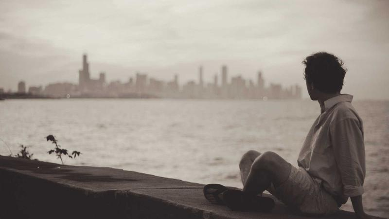

TK 반도체 팹 유치 정공법…소재 클러스터 동반 구축 핵심

대구·경북(TK) 지역이 '팹이 올 수밖에 없는 기반을 먼저 만들겠다'는 정공법을 선택해 주목받고 있다. 반도체 생산 공장(팹)을 유치하기 위한 인센티브 경쟁 대신, 전력·용수·소재 인프라를 선제 구축해 기업이 자연스럽게 몰려오도록 환경을 조성하겠다는 전략이다.
TK 지역이 이 전략을 택한 배경에는 수도권·충청권에 비해 상대적으로 취약한 반도체 생태계가 있다. 경기·충남 등이 삼성전자·SK하이닉스 중심의 탄탄한 밸류체인을 갖춘 반면, TK는 소재·부품 기업 집적도가 낮아 단순 인센티브만으로는 팹 유치가 어렵다는 판단이다.
TK 전략의 핵심은 세 가지다. 첫째, 안정적 전력 공급을 위한 전용 변전소 및 송전망 구축. 둘째, 반도체 공정용 초순수(UPW) 생산 시설 확보. 셋째, 소재·부품·장비(소부장) 기업 전용 클러스터 조성이다. 이 세 가지 인프라가 동시에 갖춰져야 팹 입지로서의 경쟁력이 완성된다.
반도체 팹 운영에는 막대한 전력이 필요하다. 첨단 10나노 이하 공정 팹은 연간 수백만 MWh의 전력을 소비한다. TK 지역은 영남권 전력망의 여유 용량을 활용하고 신규 변전 인프라를 투자 유치 전에 먼저 구축해 기업의 입지 검토 단계에서 전력 리스크를 원천 차단하겠다는 계획이다.
소재 클러스터 구축 계획도 구체성이 높다. 경북도는 구미 국가산단 내 반도체 소재 전용 단지를 지정해 포토레지스트·고순도 화학약품·특수가스 등을 공급하는 소재 기업을 집중 유치하는 방안을 추진 중이다. 팹과 소재 기업이 물리적으로 인접해야 공정 대응 속도가 빨라진다는 논리다.
구미는 과거 디스플레이·가전 소재 산업의 메카였으나, 스마트폰 부품 산업 쇠퇴와 함께 지역 경제가 침체를 겪었다. 반도체 소재 클러스터로의 전환은 구미 산업 생태계 재건의 핵심 카드로 평가받는다. 지역 내 화학·소재 기업의 반도체 피벗 수요도 상당한 수준인 것으로 알려져 있다.
전문가들은 TK 전략의 성공 열쇠로 '실행 속도'를 꼽는다. 인프라 구축에 3~5년이 걸리는 상황에서 글로벌 반도체 기업들의 투자 결정 주기가 빠른 만큼, 선제 투자를 실제로 집행하는 속도가 유치 성패를 가를 것이라는 분석이다.
해외 사례를 보면 미국 애리조나주·독일 작센주·일본 홋카이도 지역이 인프라 선투자 전략으로 TSMC·인텔 등 대형 팹을 유치하는 데 성공했다. 이들 지역 공통점은 전력·용수·소재 공급망을 먼저 확보한 뒤 기업을 초청했다는 것이다.
중앙정부 지원도 변수다. 반도체특별법 시행 이후 지방 반도체 클러스터에 대한 국비 지원 요건이 완화됐으며, TK는 2026년 하반기 중 '반도체 특화단지 2차 지정' 신청을 준비 중인 것으로 알려졌다. 1차 특화단지로 지정된 용인·평택과는 차별화된 소재 특화 전략을 강조할 방침이다.
업계 관계자는 '팹 유치는 결국 종합 경쟁력의 싸움'이라며 '인센티브 제공만으로는 부족하고, 소재·인프라·인력이 삼위일체가 돼야 기업이 움직인다'고 강조했다. TK 전략이 이 세 가지를 통합적으로 접근하고 있다는 점에서 긍정적인 평가를 받고 있다.
인력 양성도 병행 과제다. TK 지역에는 경북대·포스텍·DGIST 등 이공계 중심 대학이 다수 소재하고 있어 반도체 인력 공급 기반은 충분하다는 평가다. 다만 졸업 후 수도권으로 인재가 유출되는 문제를 해결하기 위한 정주 여건 개선이 함께 추진돼야 한다는 지적도 있다.
장기적으로 TK 반도체 소재 클러스터가 가시화될 경우, 경북·대구는 첨단 소재 공급과 시스템 반도체 설계(팹리스) 역량이 결합된 독자적 반도체 생태계를 갖추게 된다. 이는 수도권 편중 구조를 탈피한 한국 반도체 산업의 지역 균형 발전 모델로 자리매김할 수 있다는 기대를 모은다.